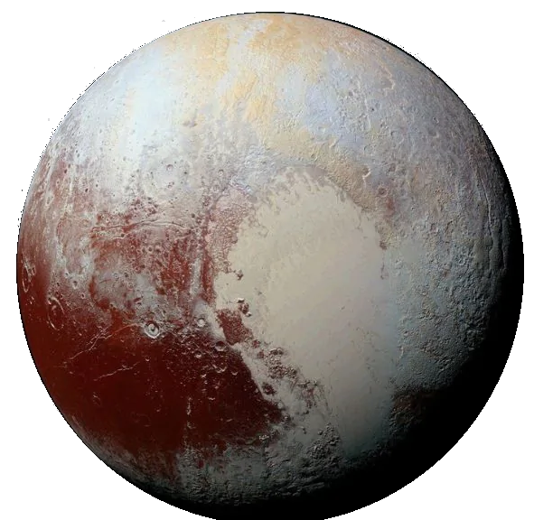

Pourquoi PLUTON n'est plus une planète ?
C’est l’astronome américain Clyde Tombaugh qui a découvert Pluton en 1930 lorsqu’il effectuait des recherches d’une éventuelle planète située après la planète Neptune. C’est donc dans ce contexte que Clyde a découvert la planète naine Pluton. Très différente des planètes connues, Pluton est une petite planète. Avec un diamètre de 2370 km, Pluton est plus petite que la Lune et ses 3475 km de diamètre ! Pluton est aussi particulière par rapport à son orbite. Presque l’intégralité des planètes de notre système solaire ont une orbite dite écliptique. Pluton, quant à elle, est sur une orbite elliptique. On peut donc qualifier Pluton d’une planète naine de par ses particularités.
Mais alors pourquoi Pluton n’est-elle plus une planète ? C’est en août 2006 que Pluton a perdu son statut de 9ème planète de notre système solaire. En effet, l’Union astronomique internationale a décidé de redéfinir le terme de planète et Pluton ne remplit plus les conditions.
3 conditions ont été définies pour qu’un astre soit qualifié de planète :
- La planète doit être en orbite autour du soleil. Cette condition exclut donc toutes les lunes qui sont en orbite autour de leurs planètes et non autour du soleil.
- La forme de la planète doit être sphérique. De par la taille et les forces (notamment la gravité), l’objet atteint une forme quasi-sphérique. Cela permet donc d’exclure les petits astres ayant des formes plus singulières.
- La dernière des conditions est que la planète doit avoir nettoyé son orbite. Comme nous le savons, un objet massif attire tous les autres corps célestes de par sa gravité. En les percutants, l’astre devient de plus en plus gros. L’astre doit donc avoir nettoyé son orbite (être seul sur sa trajectoire) pour être qualifié de planète.